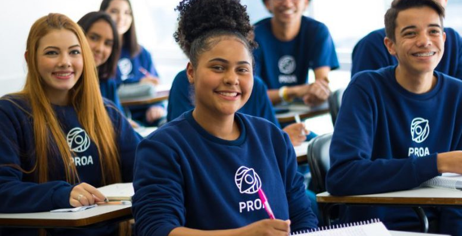
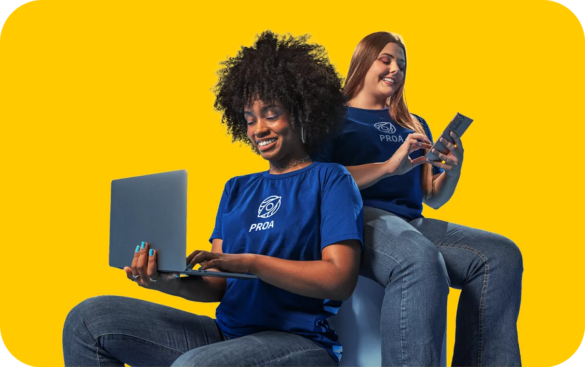

Proa Launch
Focado em jovens de baixa renda, oferecendo oportunidades de aprendizado e crescimento.

Proa Conquista
Programa pago para quem deseja investir em seu desenvolvimento e conquistar novos patamares.
Proa Restart
Para pessoas entre 28 e 50 anos que desejam recomeçar sua carreira em um intensivo de 6 meses.